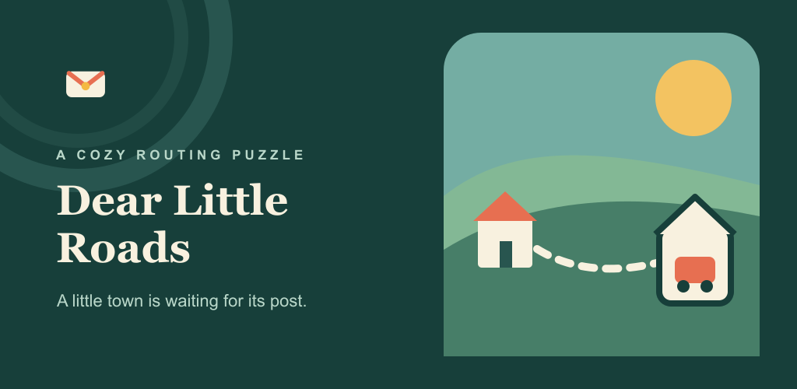

Plan
Trace short routes through tiny towns, one-way streets, Postmark counters, and Sorting Bays.
Plan compact delivery routes, load parcels in the right order, and earn Gold stamps.
Join the betaNo application or approval. Adults aged 18 or older with Android 7.0+ can join in a few quick steps.

Trace short routes through tiny towns, one-way streets, Postmark counters, and Sorting Bays.
The last parcel loaded is the first one out. Bulky cargo and limited space turn driving into a logic puzzle.
Finish the route, inspect your solution, then replay for Gold and fill a 50-route stamp book.
Participation is voluntary: testers may stop playing or uninstall at any time. The only platform request is to remain a member of the tester group and opted into the Play test continuously for 14 days; there is no daily-play obligation.